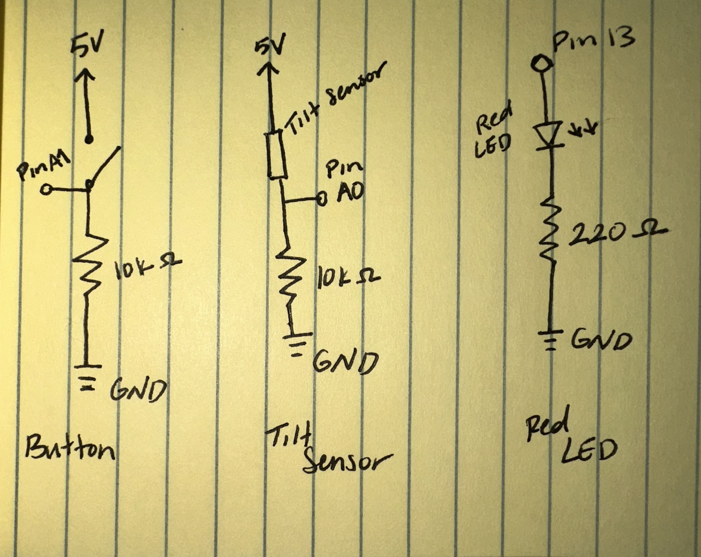
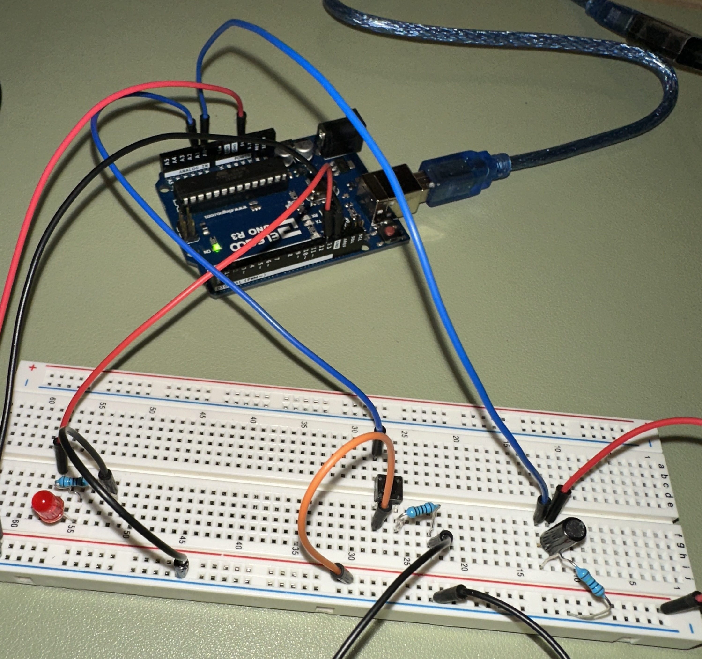

The schematic used to create the circuit with a button and tilt sensor connected to the web.
Using 10k Ohm resistors on both the button and tilt sensor using Ohm's law, with 5V as the
voltage and 0.5mA as the current, 10,000 ohms is ideal for limiting the current flowing for the intended result I wanted.
Using Ohm's law for the red LED, since there is a 1.8V drop, I am using a 220 ohm resistor.
Arduino Code:
const int ledPin = 13; // LED connected to digital pin 13
void setup(){
Serial.begin(9600);
}
void loop() {
// reading data from the analog pins and getting the data numbers
Serial.print(analogRead(A0));
Serial.print(",");
Serial.print(analogRead(A1));
Serial.print(",");
Serial.println(analogRead(A2));
delay(50);
if (Serial.available() > 0) { // If there is data available to read
char receivedChar = Serial.read(); // Read the incoming byte
if (receivedChar == '1') { // If the received character is '1'
digitalWrite(ledPin, HIGH); // Turn on the LED
} else if (receivedChar == '0') { // If the received character is '0'
digitalWrite(ledPin, LOW); // Turn off the LED
}
}
}
JavaScript Code:
*Used RGB example code from class as guideline*
const BAUD_RATE = 9600; // This should match the baud rate in your Arduino sketch
let port, connectBtn, circleDiameter; // Declare global variables
function setup() {
setupSerial(); // Run our serial setup function (below)
// Create a canvas that is the size of our browser window.
// windowWidth and windowHeight are p5 variables
createCanvas(windowWidth, windowHeight);
// Set our circle diameter based on the window dimensions
circleDiameter = min(windowWidth, windowHeight) * 0.5;
// p5 text settings. BOLD and CENTER are constants provided by p5.
// See the "Typography" section in the p5 reference: https://p5js.org/reference/
textFont("system-ui", 50);
textStyle(BOLD);
textAlign(CENTER, CENTER);
// Set the canvas blend mode. see https://p5js.org/reference/#/p5/blendMode
blendMode(ADD);
}
function draw() {
const portIsOpen = checkPort(); // Check whether the port is open (see checkPort function below)
if (!portIsOpen) return; // If the port is not open, exit the draw loop
let str = port.readUntil("\n"); // Read from the port until the newline
if (str.length == 0) return; // If we didn't read anything, return.
let rgbArray = str.trim().split(","); // Trim whitespace and split on commas
// Convert each element to a number, map it to the RGB range, and round to nearest integer
const red = round(map(Number(rgbArray[0]), 512, 1023, 0, 255));
const green = round(map(Number(rgbArray[1]), 512, 1023, 0, 255));
const blue = round(map(Number(rgbArray[2]), 512, 1023, 0, 255));
clear(); // Clear the canvas
background(0); // Make the background black
translate(windowWidth / 2, windowHeight / 2); // Move the origin to the center
// Text on top
fill(255);
stroke(0);
strokeWeight(4);
text(`${red}, ${green}, ${blue}`, 0, -circleDiameter * 0.75);
// Red circle
fill(red, 0, 0);
circle(0, circleDiameter / 4, circleDiameter);
// Green circle
rotate((2 * PI) / 3);
fill(0, green, 0);
circle(0, circleDiameter / 4, circleDiameter);
// Blue circle
rotate((2 * PI) / 3);
fill(0, 0, blue);
circle(0, circleDiameter / 4, circleDiameter);
}
// Three helper functions for managing the serial connection.
function setupSerial() {
port = createSerial();
// Check to see if there are any ports we have used previously
let usedPorts = usedSerialPorts();
if (usedPorts.length > 0) {
// If there are ports we've used, open the first one
port.open(usedPorts[0], BAUD_RATE);
}
// create a connect button
connectBtn = createButton("Connect to Arduino");
connectBtn.position(5, 5); // Position the button in the top left of the screen.
connectBtn.mouseClicked(onConnectButtonClicked); // When the button is clicked, run the onConnectButtonClicked function
}
function checkPort() {
if (!port.opened()) {
// If the port is not open, change button text
connectBtn.html("Connect to Arduino");
// Set background to gray
background("gray");
return false;
} else {
// Otherwise we are connected
connectBtn.html("Disconnect");
return true;
}
}
function onConnectButtonClicked() {
// When the connect button is clicked
if (!port.opened()) {
// If the port is not opened, we open it
port.open(BAUD_RATE);
} else {
// Otherwise, we close it!
port.close();
}
}
function keyPressed() {
if (key === ' ') {
// If the space bar is pressed
port.write('1'); // Send '1' to the Arduino
}
}


Here is the finished working product! In the picture and GIF above, there is a button and tilt sensor connectde to the Arduino and web.
The circles and colors on the screen go away when the tilt sensor is tilted and when the button is pressed. This is because
analogRead() gets values from the button and tilt sensors. At the default state (not pressed or tilted), both the analog pins are getting around the max value (1023),
when the button is pressed or the tilt sensor is tilted (circuit is grounded/disconnected), the value drops down to nearly 0. By using these values in the code, I am able to
get the web to react and change the display based on the change in values. When you press the space bar on the keyboard, the red LED on the breadboard turns on.